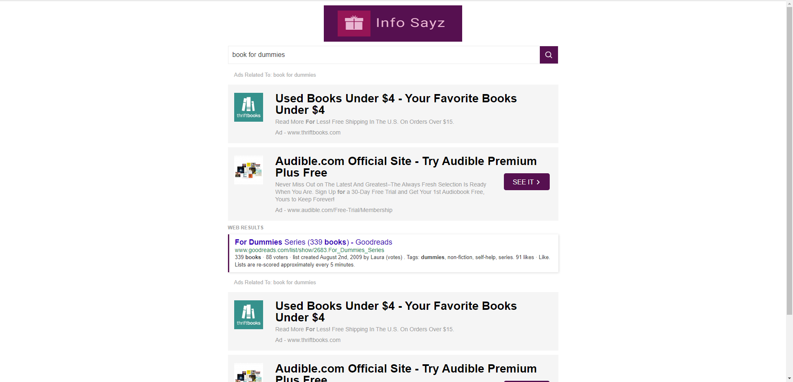
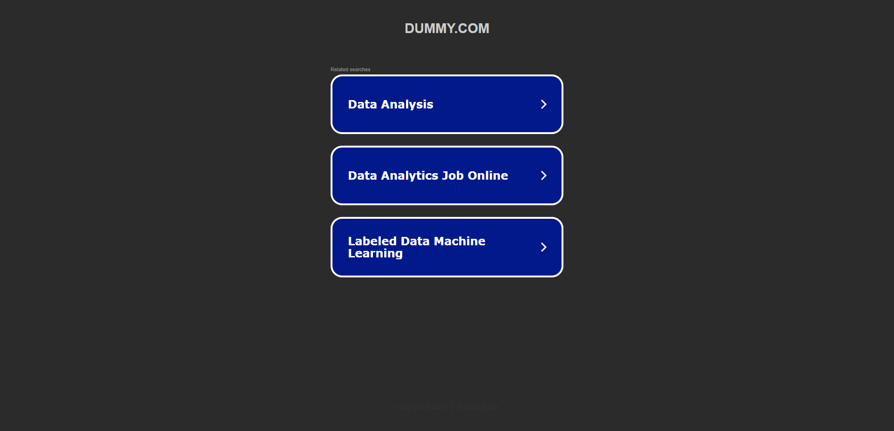
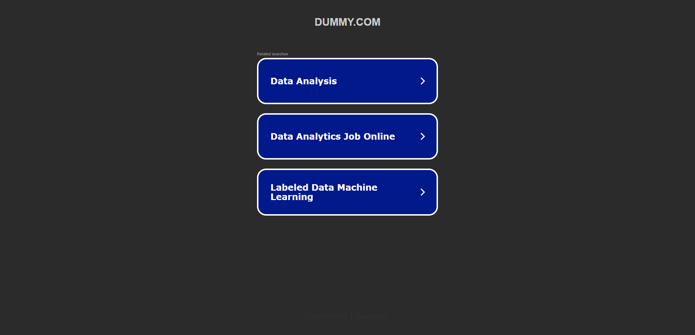
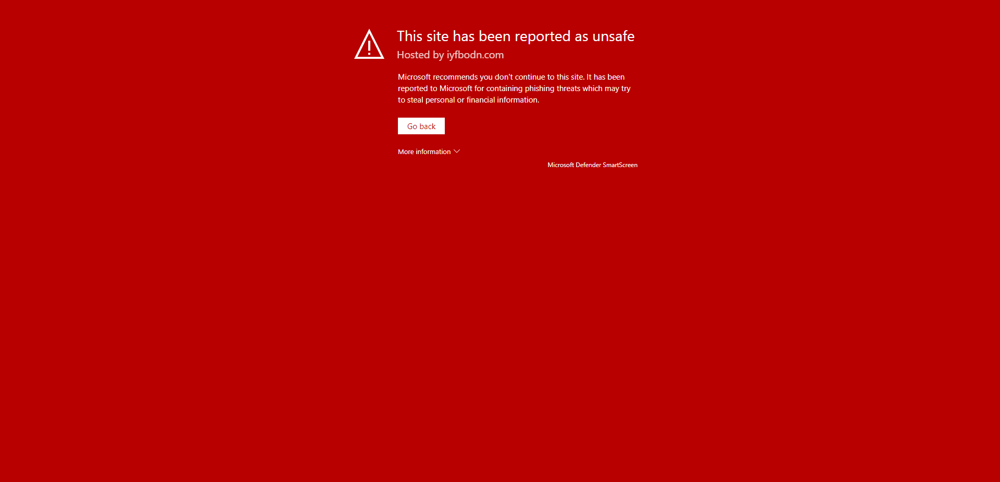
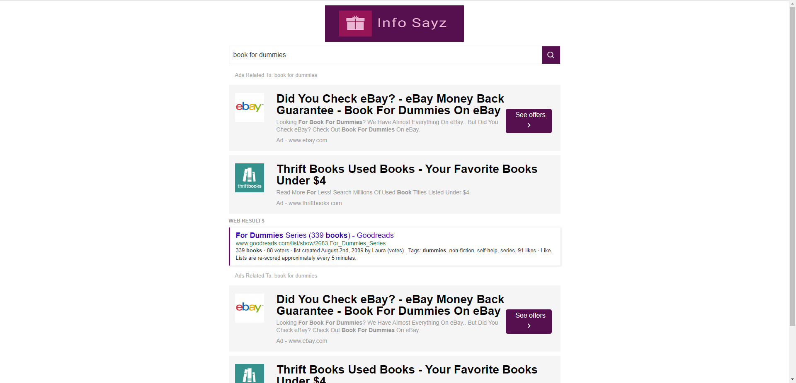
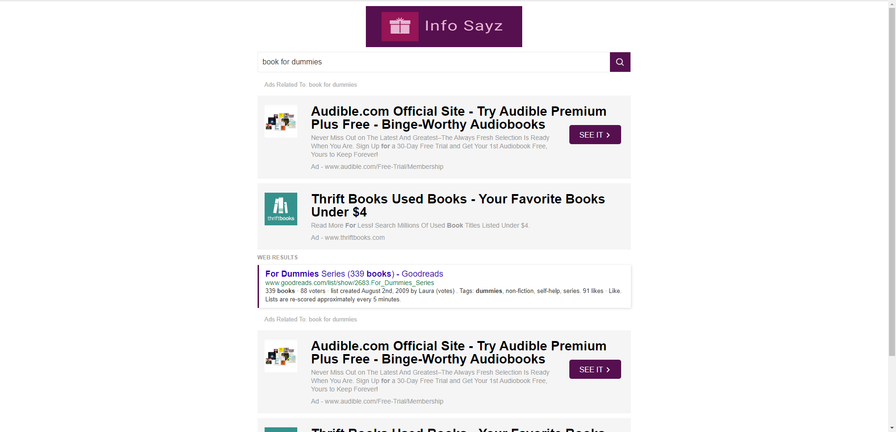
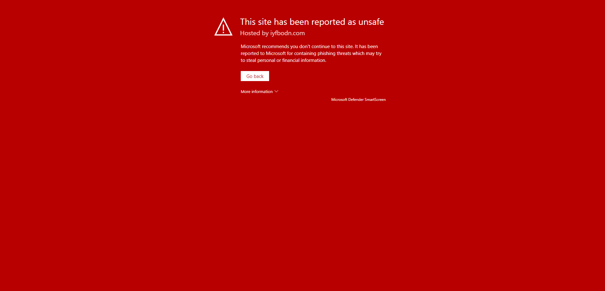
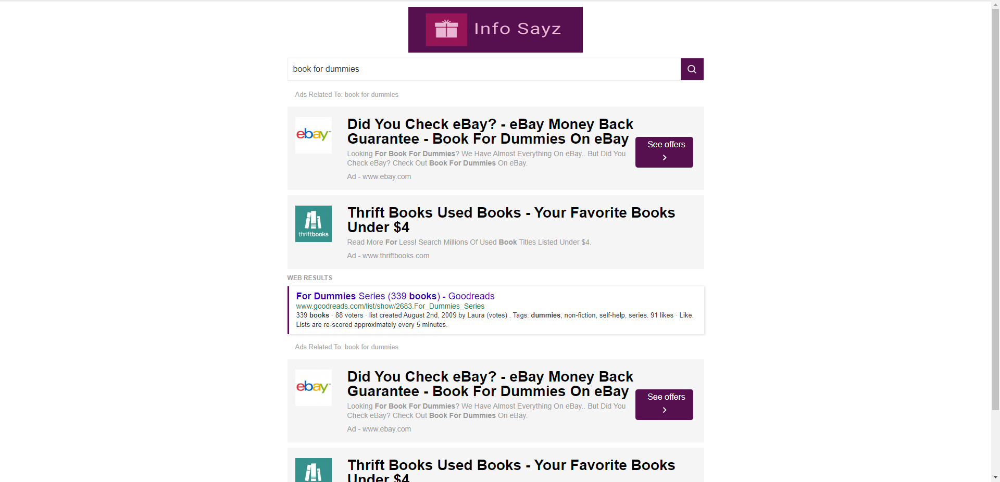
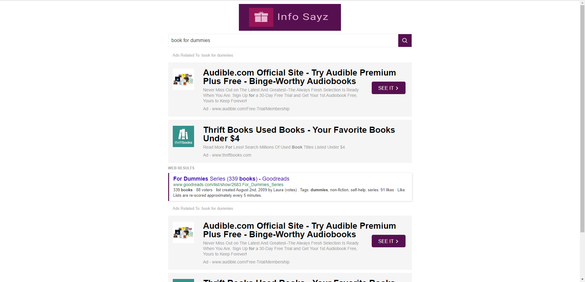

-
Dietician Home Page
12:56:26 AM / 00:01:25:236 Fail
Dietician Home Page
06.13.2022 12:56:26 AM 06.13.2022 12:57:51 AM 00:01:25:236 · #test-id=1FailClicking Diet Plans Page After LoginGiven User is on the Dietician Home pagestepDefinitions.Hooks.failedScreenshot(io.cucumber.java.Scenario)imageWhen User selects Diet Plans buttonStep skippedThen User lands on Diet Plans pageStep skippedFailDietician Home Page "Logged in as Dietician name" message verification After LoginWhen User is on the Dietician Home pagestepDefinitions.Hooks.failedScreenshot(io.cucumber.java.Scenario)imageThen User can see Logged in as Dietician name message in top of right side barStep skippedFailVerify Dietician Home Page Side Bar After LoginWhen User is on the Dietician Home pagestepDefinitions.Hooks.failedScreenshot(io.cucumber.java.Scenario)image Then User can see Banner or Announcements section in right side barStep skippedFailClicking New Patient Page After LoginGiven User is on the Dietician Home pagestepDefinitions.Hooks.failedScreenshot(io.cucumber.java.Scenario)imageWhen User selects New patient buttonStep skippedThen User lands on New Patient pageStep skippedFailVerify Dietician Home Page After LoginWhen User is on the Dietician Home pagestepDefinitions.Hooks.failedScreenshot(io.cucumber.java.Scenario)imageThen User can see the Home button on header menuStep skippedFailVerify Dietician Home Page Content After LoginWhen User is on the Dietician Home pagestepDefinitions.Hooks.failedScreenshot(io.cucumber.java.Scenario)imageThen User can read Dietician Home page image and contentStep skippedFailVerify New Patient Page After LoginWhen User is on the Dietician Home pagestepDefinitions.Hooks.failedScreenshot(io.cucumber.java.Scenario)image
Then User can see Banner or Announcements section in right side barStep skippedFailClicking New Patient Page After LoginGiven User is on the Dietician Home pagestepDefinitions.Hooks.failedScreenshot(io.cucumber.java.Scenario)imageWhen User selects New patient buttonStep skippedThen User lands on New Patient pageStep skippedFailVerify Dietician Home Page After LoginWhen User is on the Dietician Home pagestepDefinitions.Hooks.failedScreenshot(io.cucumber.java.Scenario)imageThen User can see the Home button on header menuStep skippedFailVerify Dietician Home Page Content After LoginWhen User is on the Dietician Home pagestepDefinitions.Hooks.failedScreenshot(io.cucumber.java.Scenario)imageThen User can read Dietician Home page image and contentStep skippedFailVerify New Patient Page After LoginWhen User is on the Dietician Home pagestepDefinitions.Hooks.failedScreenshot(io.cucumber.java.Scenario)image Then User can see the "New Patient" tab from the header menuStep skippedFailClicking My Patient Page After LoginGiven User is on the Dietician Home pagestepDefinitions.Hooks.failedScreenshot(io.cucumber.java.Scenario)imageWhen User selects My Patient buttonStep skippedThen User lands on My Patient pageStep skippedFailVerify Diet Plans Page After LoginWhen User is on the Dietician Home pagestepDefinitions.Hooks.failedScreenshot(io.cucumber.java.Scenario)imageThen User can see the "Diet Plans" tab from the header menuStep skippedFailVerify My Patient Page After LoginWhen User is on the Dietician Home pagestepDefinitions.Hooks.failedScreenshot(io.cucumber.java.Scenario)imageThen User can see the "My Patient" tab from the header menuStep skippedFailVerify Dietician Home Page SIGN OUT After LoginGiven User is on the Dietician Home pagestepDefinitions.Hooks.failedScreenshot(io.cucumber.java.Scenario)imageWhen User can see SIGN OUT button after successful loginStep skippedThen User can click on SIGN OUT button for logging off successfullyStep skipped
Then User can see the "New Patient" tab from the header menuStep skippedFailClicking My Patient Page After LoginGiven User is on the Dietician Home pagestepDefinitions.Hooks.failedScreenshot(io.cucumber.java.Scenario)imageWhen User selects My Patient buttonStep skippedThen User lands on My Patient pageStep skippedFailVerify Diet Plans Page After LoginWhen User is on the Dietician Home pagestepDefinitions.Hooks.failedScreenshot(io.cucumber.java.Scenario)imageThen User can see the "Diet Plans" tab from the header menuStep skippedFailVerify My Patient Page After LoginWhen User is on the Dietician Home pagestepDefinitions.Hooks.failedScreenshot(io.cucumber.java.Scenario)imageThen User can see the "My Patient" tab from the header menuStep skippedFailVerify Dietician Home Page SIGN OUT After LoginGiven User is on the Dietician Home pagestepDefinitions.Hooks.failedScreenshot(io.cucumber.java.Scenario)imageWhen User can see SIGN OUT button after successful loginStep skippedThen User can click on SIGN OUT button for logging off successfullyStep skipped
-
java.lang.AssertionError
11 tests
java.lang.AssertionError
11 failedStatus Timestamp TestName Fail 00:56:26 AM When User is on the Dietician Home page Dietician Home Page.Verify New Patient Page After Login.When User is on the Dietician Home pageFail 00:56:26 AM When User is on the Dietician Home page Dietician Home Page.Verify Dietician Home Page Side Bar After Login.When User is on the Dietician Home pageFail 00:56:26 AM When User is on the Dietician Home page Dietician Home Page.Dietician Home Page "Logged in as Dietician name" message verification After Login.When User is on the Dietician Home pageFail 00:56:26 AM When User is on the Dietician Home page Dietician Home Page.Verify My Patient Page After Login.When User is on the Dietician Home pageFail 00:56:26 AM When User is on the Dietician Home page Dietician Home Page.Verify Dietician Home Page Content After Login.When User is on the Dietician Home pageFail 00:56:26 AM When User is on the Dietician Home page Dietician Home Page.Verify Diet Plans Page After Login.When User is on the Dietician Home pageFail 00:56:26 AM Given User is on the Dietician Home page Dietician Home Page.Clicking Diet Plans Page After Login.Given User is on the Dietician Home pageFail 00:56:26 AM Given User is on the Dietician Home page Dietician Home Page.Clicking My Patient Page After Login.Given User is on the Dietician Home pageFail 00:56:26 AM When User is on the Dietician Home page Dietician Home Page.Verify Dietician Home Page After Login.When User is on the Dietician Home pageFail 00:56:26 AM Given User is on the Dietician Home page Dietician Home Page.Clicking New Patient Page After Login.Given User is on the Dietician Home pageFail 00:57:28 AM Given User is on the Dietician Home page Dietician Home Page.Verify Dietician Home Page SIGN OUT After Login.Given User is on the Dietician Home page
-
@DieticianLogin
11 tests
@DieticianLogin
11 failedStatus Timestamp TestName Fail 00:56:26 AM Clicking Diet Plans Page After Login Dietician Home Page.Clicking Diet Plans Page After LoginFail 00:56:26 AM Dietician Home Page "Logged in as Dietician name" message verification After Login Dietician Home Page.Dietician Home Page "Logged in as Dietician name" message verification After LoginFail 00:56:26 AM Verify Dietician Home Page Side Bar After Login Dietician Home Page.Verify Dietician Home Page Side Bar After LoginFail 00:56:26 AM Clicking New Patient Page After Login Dietician Home Page.Clicking New Patient Page After LoginFail 00:56:26 AM Verify Dietician Home Page After Login Dietician Home Page.Verify Dietician Home Page After LoginFail 00:56:26 AM Verify Dietician Home Page Content After Login Dietician Home Page.Verify Dietician Home Page Content After LoginFail 00:56:26 AM Verify New Patient Page After Login Dietician Home Page.Verify New Patient Page After LoginFail 00:56:26 AM Clicking My Patient Page After Login Dietician Home Page.Clicking My Patient Page After LoginFail 00:56:26 AM Verify Diet Plans Page After Login Dietician Home Page.Verify Diet Plans Page After LoginFail 00:56:26 AM Verify My Patient Page After Login Dietician Home Page.Verify My Patient Page After LoginFail 00:57:28 AM Verify Dietician Home Page SIGN OUT After Login Dietician Home Page.Verify Dietician Home Page SIGN OUT After Login
Started
Jun 13, 2022 12:56:23 AM
Ended
Jun 13, 2022 12:57:52 AM
Features Passed
0
Features Failed
1
Features
Scenarios
Steps
Timeline
Tags
| Name | Passed | Failed | Skipped | Others | Passed % |
|---|---|---|---|---|---|
| @DieticianLogin | 0 | 11 | 0 | 0 | 0% |